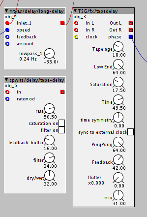

Do you really need the "endpoint"? Isn't the endpoint the same minus one as the starting point of the next sample? Saves you 1 32bit value for each sample. As for the active/inactive values, perhaps you can put them all together in a single 32bit value for 32 samples?-> Each bit sets the state of another sample. For 64 samples, you'ld only need 2 32bit values..
You could save all these values in a single 32bit array, taking the first couple of slots for amount of recorded samples and active/inactive samples, and use the rest for the starting point of the samples (end point is always startpoint of next samples minus one).
Rbrt Contributions
SirSickSik
#230
rbrt
#231
yep.the indexes are stored for each of the 128 possible 'slots'.when you start recording to slot 64 and then to slot 16,the startpoint of slot 16 is not the endpoint of slot 15...
yeah,it's possible,but it's easy to get confusing for others who want to write objects that use the sample start/end info created by 'sb rec'
what I think makes sense is to get rid of the 'active'-info by using 'endpoint' as a boolean instead:if 'endpoint' is true,this automatically means the 'slot' is active.
so,this would compact the size of the array used internally to 256 32-bit-values
I'm going to check...
SirSickSik
#232
"yep.the indexes are stored for each of the 128 possible 'slots'.when you start recording to slot 64 and then to slot 16,the startpoint of slot 16 is not the endpoint of slot 15..."
From this I understand that you record the audio-samples one after the other in the same table and save the sample-slot next to it in it's own table to be able to tell which sample belongs to which index of sample-slot. Then you should be able to use that table to see what the starting position is of the next sample in line, no matter what slot in belongs to..right?
rbrt
#233
sort of but...
hey I've been working for it quite some time,especially on the defragmentation-part...and i'm still a bit surprised it's actually working.
I really like to just bam! record a lot of samples and decide later on to delete some of them,but this will result in unused chunks in the table and thus,you'll loose recording time.
so,defragmentation is built in.
it gets quite fuzzy there, and maybe I really dont't have 'the big picture' anymore.
anyway, I always ended up with the need for at least an endpoint,without,the code would just get too complex.
also,people probably won't use a lot of recorders in one patch,rather a lot of players.so I decided to try to keep it simple,even if it gets a bit uneffiecient in terms of ram-usage.
but you are invited to dig in the code,I will put some comments inside for the next version,
which definitely won't have the 'active' - flag anymore (so,just start/endpoint)
jaffasplaffa
#234
Hey @rbrt 
Have been using your object "rbrt/launchpad/launchpad" in to communicate
between Axoloti and Launchpad. Very nice object
It works very well when using it as the only midi device connected to Axoloti via USB Host port.
But I noticed yesterday I tried to connect a second midi device, a Launch Controller(via computer) to Axoloti, that there might be some midi crosstalk going on in the object.
It seems like the top row buttons, midi cc 104-112, are affected by any other incoming midi CC values that is fed to axoloti. For example if I set the top row to nr 5, and then touch one of the knobs on my Launch controller, the top row is affected and jumps to value 0.
And it doesnt matter which midi channel i send midi cc's from midi channel 1, 2, 3 they all seem to affect the top row.
Would you have a suggestion for a workaround this?
Thanks for some great objects, btw 
rbrt
#235
...ah uh nasty.
actually, I never tried the object in a midi-setup that incorporates more than a single launchpad..
and the code regading midi in is taken from someone else's object,
so it's quite possible that this is a bug.
I'll have a look as soon as I get my hands back on the axo!
cheers,Robert
jaffasplaffa
#236
Hey @rbrt
Thanks, I actually think I figured out what the problem is. It happens cause, the top out shows the midi cc number that is last dialed in.... So If I dial a knob on my Launch controller, the rbrt/launchpad/launchpad in "catches" the midi cc number from the dial from Launch Controller ad changes the output of the "top" row. Not really sure how to fix it though. I am thinking about maybe adding some kind of minimum/maximum value so it cant go out of range. But it would probably be more of a work around than a fix.
I have previously had succes with passing data through a table first, before sending it to its destination. Think I'll try that too for this setup.
srodillof
#237
hey!
would you mind sharing your patch?
I'm planning on making a very similar machine to the one you have described.
4 track loop station, made out of 2 axoloti boards with midi clock sync.
also BIG thank you to you, @rbrt and @Blindsmyth . this whole thread has taught me a LOT about axoloti and loopers.
also, I have a small question:
I'm interested in the "1.1.1." style looper that was discussed previously.
how did you manage to solve this?
I got a bit lost in the technical vocabulary, so it would be great if any of you could help me with this one.
again, THANKS A LOT to all of you and everybody else who has contributed!!!
valmir
#238
hi there!
I think that sharing my patch at this point would be fairly useless, because there a lot going on unrelated to loop but mixed in the patching(highly human unreadable), I used the old @rbrt loopers and it relies specifically on the hardware I use to control it... and the final version by the way has syncing only per board...
If you want I can offer the little knowledge I retained after doing it and help you a little if I can.
Upper in the thread I posted a trivial looper that can sync to a clock.
I remember it was very easy to make a midi clock from the range output of lrec.
You should definitely implement yourself a way that fits your needs to sync the start/stop between boards.
srodillof
#239
you reckon it's possible to set the clock with the length of the first loop (fist 2 taps), and sync every other loop module across the 2 boards to that clock? I was thinking on doing this by connecting via both MIDI IN and MIDI OUT on the 2 boards, so that any of the 4 modules can be the "master loop"
also, does your looper sync the recording and playback of a new loop with the first bar of the master loop?
I have read a lot about patches and everything else in the site, but I still haven't tried anything because the 2 boards I ordered have been delayed. I'm also working on a deadline (university project) so I'm gathering as much info as possible before actually doing anything.
From what you guys have discussed here, I'm pretty sure all of this is possible, but I'd just like to confirm since my interpretations of the technical terminology might be wrong.
thanks for the reply!
valmir
#240
Yes indeed. That's what I did for a while but my needs were different. My opinion is that this approach works best if you preset the loops relative lengths, like track1 is 4 bars, t2 is 8, and so on... and of course you always play 4/4, otherwise you'll have to set different math for different time signature. (that's why I changed to a different system, which won't be syncable between boards unless SPlink gets finally developed...)
(mind that I always used @rbrt old loopers, never the new ones which may be different and, probably, better)
I actually wasn't able to do that, but maybe it was me... I had a track that was always the master. When you record a loop the object lrec spits out the number of samples the loop is long. Divide that integer number for the number of bars, multiply it by 24, feed it to s2f (sample to frequency) and use the output as the frequency of a square wave oscillator. Et voilà your clock. Use something like the patch i posted somewhere up in the thread as a slave track.
Yes! My method use position sync and @rbrt loop_sync, but it will also work with clock sync ( I don't have the patcher installed on the pc I'm using right now, that's why I'm typing so much instead of uploading a patch...)
I'm pretty sure you'll be alright... for me the hardest part (which I suggest you think thoroughly before starting) is the logic underneath how you want it to work I.E: you're allowed to record only one track at the time or not? If so, if you are recording loop1 and press record for loop2, what do you want to happen? (like, 1 starts looping and 2 starts recording, loop1 is recorded but stops... all this kind of options... this took me some time to be refined to my needs, but I actually make a living as a livelooping musician, so I'm quite picky about it  )
)
srodillof
#241
I have most of the functions planned but I had not thought about starting REC while another loop is already recording! I'll go through every possible escenario and figure those details out.
thanks for the clear explanations!
on a side note, could you share a video of one of your performances (if you have any)? I'd like to see your show and how an axoloti-based looper behaves in a live setting.
cheers!
valmir
#242
Thanks for the interest!
I reeeaally suck at online promotion, everything I have ATM is some audio I recorded a while back.
IRRC everything is axoloti (reverbs, delays, looping and effects on looping) except for the octave down and phaser which were guitar pedals (later implemented on the third axoloti I bought). It's an almost non edited live.
Enjoy
srodillof
#243
hey all,
quick question:
how can I match the tempo of the loop (set by the length of the first loop, the way rbrt's looper help patch shows) to a square LFO? I want an LED to give me tempo feedback, but I can't seem to match the phase or sample length or range value with the pitch input of the LFO.
thanks!!
rbrt
#244
..I did an object called 'k2f' which translates 'k-rate ticks' to something like 'frequency' in axo-context.
in the library at rbrt/math/k2f
check if it works..
srodillof
#245
thank you! that worked
although, I ended up setting timepoint triggers on beats 1, 2, 3 and 4, and set a pulse length for each trigger. I think it works better this way....the looper works so good!! my Akai LPD8 is going to look beautiful when I configure all the lights to match the functions of the looper.
srodillof
#247
new question:
I'm still struggling to understand how the clock of the looper works. I understand the role of the phasor (phase outlet) and how it dictates de tempo, but how can I get a static number that signifies this tempo?
I want to add a echo/delay effect that syncs to the tempo of the master loop. these 3 delay objects have different inlets with similar purpose: "speed", "clock" and "ratemod". what part of the rbrt/looper/lrec object or the transport/pashor patch object should I be using for this?
thank you.

chaocrator
#248
just a note.
(at least) launchpad in does not work with Launchpad Pro  probably due to its extra 16 buttons.
probably due to its extra 16 buttons.
some of pads are just skipped, but i still can't figure out the regularity.
on launchpad mini, everything works as expected.
jaffasplaffa
#249
Got a launchpad mini here too. Really loving it, but seriously, the midi notes assigned to the pads are really illogical set up. I really dont understand why its set up as it is, it makes no sense to me, in a musical perspective.
Buy hey, it works great with Axo and its really cheap, so i guess thats probably the reason for it to me like this.
chaocrator
#250
yes, the default note matrix of launchpads is useless (from the musical point of view).
so the idea is transforming it on the fly into something better )
btw, launchpad pro has velocity sensitive pads. which makes it a superb input device... if the owner makes an axoloti patch for it ))